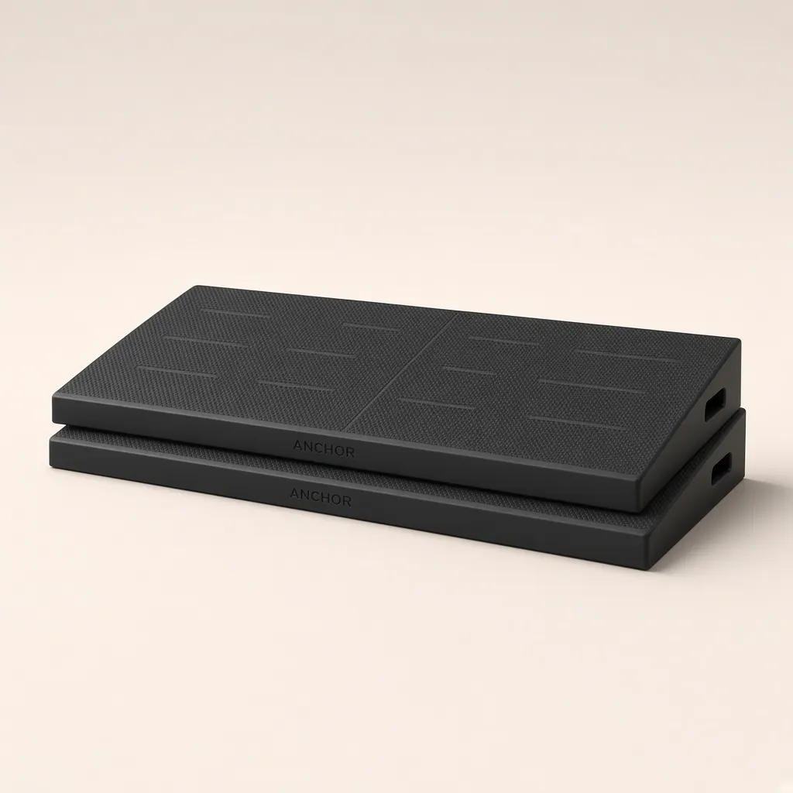

Why we made it (example story)
Built by a Garage Lifter Who Kept Sliding Off His Wedge
ANCHOR started with Dan, a home-gym lifter with long femurs and stiff ankles. He squatted on a foam wedge until it flattened. Then he bought a $150 plywood board. In socks, his feet slid off it, and within a year the grip tape was peeling.
So he worked with a rubber molder to make one piece: a hardwood core over-molded in natural rubber, with the grip cast into the surface. It took 11 prototypes to find a texture that held socks without feeling like sandpaper on bare feet.
- 15°one even angle
- 28" × 11"fits up to men's 15
- 1,000 lbload rating
- ~7 lbwith carry handle
- Hardwoodcore, no foam
- Moldedgrip, no tape
Dan and his story are fictional, for this workshop example.